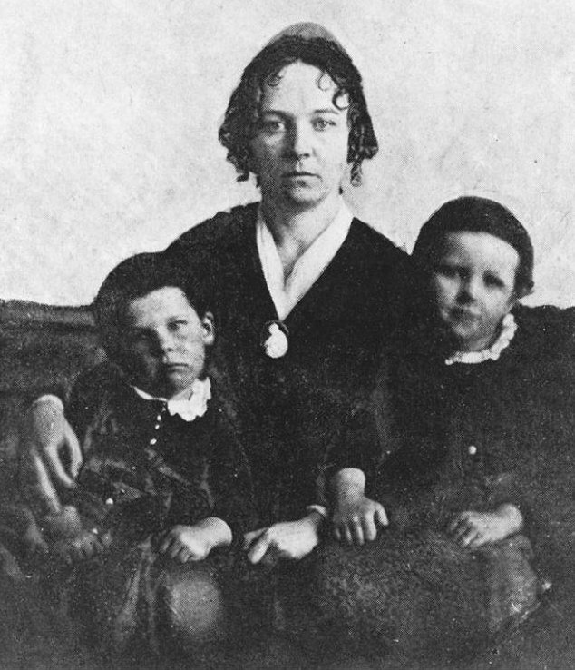
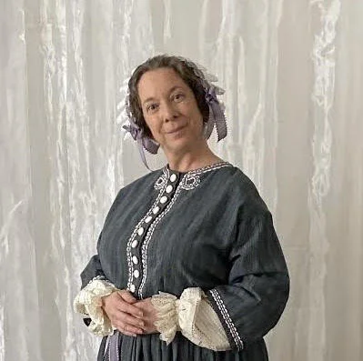
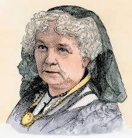
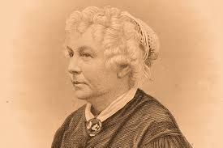

Pioneer of Women's Rights
Elizabeth Cady Stanton was born on November 12, 1815, and died on October 26, 1902. She was the first woman to fight for women's rights. She was a key leader, philosopher, and organizer of the US women's rights movement. She was the main author of the Declaration of Sentiments and the heart of the Seneca Falls Convention, which led to the women's suffrage movement. Elizabeth's work made the Seneca Falls Convention the first women's rights convention in the United States.
Stanton played a big role in the early women's rights movement. She helped plan the Seneca Falls Convention in 1848, where the Declaration of Sentiments was signed. This document demanded equal rights for women. She fought for women's right to vote, own property, and get an education. Stanton helped write the 14th and 15th Amendments to the U.S. Constitution, but she was unhappy that they didn't include women. She wrote a lot, including "The Woman's Bible," which looked at the Bible from a feminist point of view. Her work was the basis for the 19th Amendment, which gave women the right to vote.
Elizabeth Cady Stanton passed away in New York City on October 26, 1902, at the age of 86. Woodlawn Cemetery in the Bronx is where she is buried. She is still remembered as one of the most important people in American feminism. She inspired many women to fight for equal rights, and she is credited with helping women get the right to vote in the United States. People remember her today as a pioneer who fought against social norms and worked for gender equality.
"We hold these truths to be self-evident: that all men and women are created equal; that they are endowed by their Creator with certain inalienable rights; that among these are life, liberty, and the pursuit of happiness."
"The best protection any woman can have is courage."
"Self-development is a higher duty than self-sacrifice."




Works Cited